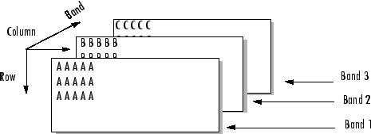

multibandwrite
Write band-interleaved data to file
Syntax
multibandwrite(data,filename,interleave)
multibandwrite(data,filename,interleave,start,totalsize)
multibandwrite(...,param,value...)
Description
multibandwrite(data,filename,interleave) writes
data, a two- or three-dimensional numeric or logical array, to the
binary file specified by filename. The filename is
specified as a character vector or string scalar. The length of the third dimension of
data determines the number of bands written to the file. The bands
are written to the file in the form specified by interleave. See Interleave Methods for more information about this
argument.
If filename already exists, multibandwrite overwrites it unless you specify
the optional offset parameter. For information about other optional
parameters, see the last syntax and its description.
multibandwrite(data,filename,interleave,start,totalsize) writes data to
the binary file filename in chunks. In this syntax, data is
a subset of the complete data set.
start is a 1-by-3 array [firstrow
firstcolumn firstband] that specifies the location to start
writing data. firstrow and firstcolumn specify
the location of the upper left image pixel. firstband gives
the index of the first band to write. For example, data(I,J,K) contains
the data for the pixel at [firstrow+I-1, firstcolumn+J-1] in
the (firstband+K-1)-th band.
totalsize is a 1-by-3 array, [totalrows,totalcolumns,totalbands],
which specifies the full, three-dimensional size of the data to be
written to the file.
Note
In this syntax, you must call multibandwrite multiple
times to write all the data to the file. The first time it is called, multibandwrite writes
the complete file, using the fill value for all values outside the
data subset. In each subsequent call, multibandwrite overwrites
these fill values with the data subset in data.
The parameters filename, interleave, offset,
and totalsize must remain constant throughout the
writing of the file.
multibandwrite(...,param,value...) writes
the multiband data to a file, specifying any of these optional parameter/value
pairs.
Parameter | Description |
|---|---|
| Character vector or string scalar specifying the form and size of each element written
to the file. See the help for |
| The number of bytes to skip before the first data element.
If the file does not already exist, This
option is useful when you are writing a header to the file before
or after writing the data. When writing the header to the file after
the data is written, open the file with |
| Character vector or string scalar to control the format in which the data is written to
the file. Typical values are |
| A number specifying the value to use in place of missing
data. |
Interleave Methods
interleave is a character vector or string scalar that specifies how
multibandwrite interleaves the bands as it writes data to the file.
If data is two-dimensional, multibandwrite ignores
the interleave argument. The following table lists the supported methods
and uses this example multiband file to illustrate each method.

Supported methods of interleaving bands include those listed below.
Method | Specified as | Description | Example |
|---|---|---|---|
Band-Interleaved-by-Line |
| Write an entire row from each band | AAAAABBBBBCCCCC AAAAABBBBBCCCCC AAAAABBBBBCCCCC |
Band-Interleaved-by-Pixel |
| Write a pixel from each band | ABCABCABCABCABC... |
Band-Sequential |
| Write each band in its entirety | AAAAA AAAAA AAAAA BBBBB BBBBB BBBBB CCCCC CCCCC CCCCC |
Examples
Note
To run these examples successfully, you must be in a writable folder.
Example 1
Write all data (interleaved by line) to the file in one call.
data = reshape(uint16(1:600),[10 20 3]); multibandwrite(data,"data.bil","bil")
Example 2
Write a single-band tiled image with one call for each tile. This is only
useful if a subset of each band is available at each call to
multibandwrite.
numBands = 1; dataDims = [1024 1024 numBands]; data = reshape(uint32(1:(1024 * 1024 * numBands)), dataDims); for band = 1:numBands for row = 1:2 for col = 1:2 subsetRows = ((row-1)*512+1):(row*512); subsetCols = ((col-1)*512+1):(col*512); upperLeft = [subsetRows(1),subsetCols(1),band]; multibandwrite(data(subsetRows,subsetCols,band), ... "banddata.bsq","bsq",upperLeft,dataDims) end end end
Version History
Introduced before R2006a
See Also
multibandread | fwrite | fread